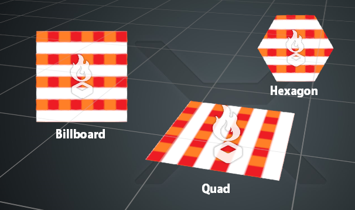

Формы (Shapes) частиц
Начинающий Художник Программист
Поскольку частицы по сути являются лишь точками в пространстве, они не имеют определенной формы. Вместо этого Stride рисует фигуры между точками.
Основное различие между формами частиц заключается в том, всегда ли они обращены к камере или могут свободно вращаться в трехмерном пространстве.
В настоящее время излучатели могут одновременно излучать только один тип формы.
Билборды (Billboards)
Билборды всегда повернуты к камере. Они кажутся фиксированными в трехмерном пространстве, поэтому они не меняются в зависимости от положения камеры.
Поскольку они всегда обращены к камере, билборды поддерживают только угловое вращение. Это означает, что они вращаются только по часовой стрелке или против часовой стрелки.
Шестигранник (Hexagon)
Шестигранники идентичны билбордам, но имеют шестиугольную форму. Как и билборды, они всегда обращены к камере и поддерживают только угловое вращение.
Квадраты (Quads)
Квадраты идентичны билбордам, но не поворачиваются лицом к камере, и таким образом поддерживать 3D-ориентацию и вращение.
Stride рисует частицы билборда в соответствии со значением Размера (Size) в свойствах эффекта частиц. Если размер не указан, Stride расширит квадраты до 1 м x 1 м.

Спрайт, выровненный по направлению (Direction-aligned sprite)
Этот спрайт выровнен по билборду и растянут в направлении частицы. Вы можете задать начальное направление частиц с помощью инициализатора, или добавить апдейтер, который записывает скорость частицы как направление.
Ленты и траектории движения (Ribbons и Trails)
См. Ленты и траектории движения.